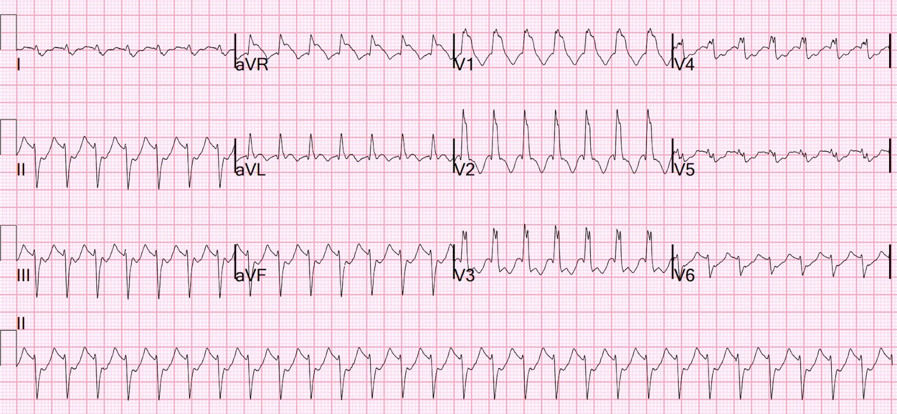
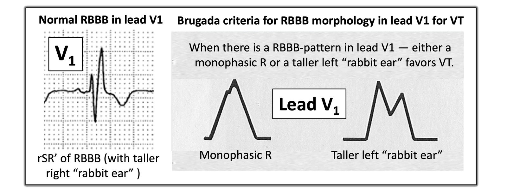
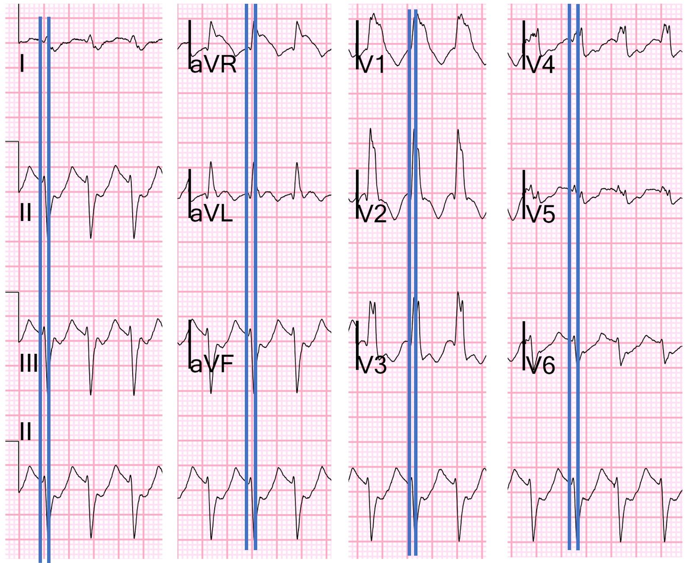
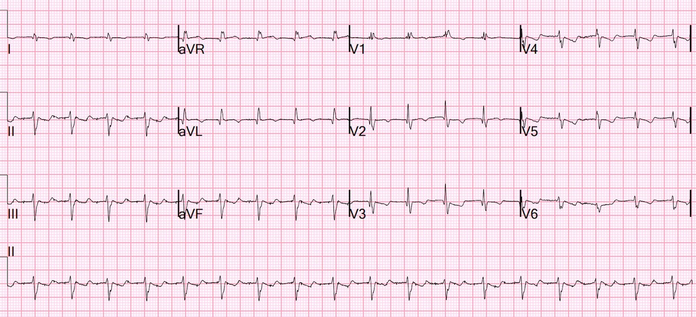
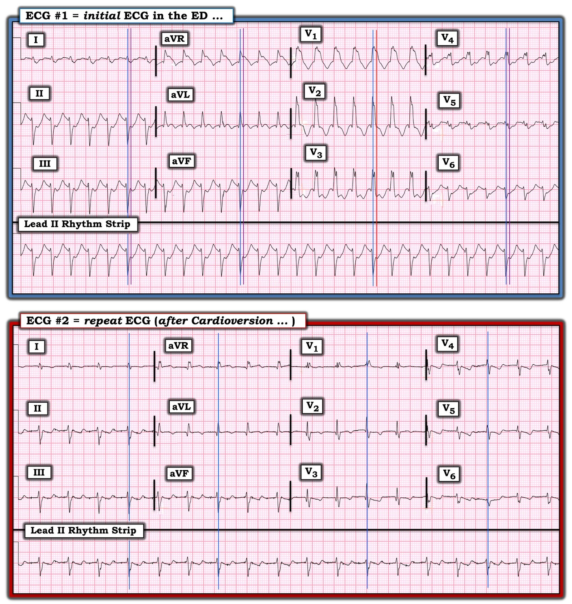

23/06/2023 — Nhịp nhanh QRS rộng và tụt huyết áp ở bệnh nhân ngoài 50 tuổi có tiền sử bệnh cơ tim — đó là gì?
Bản dịch tiếng Việt của bài "Wide complex tachycardia and hypotension in a 50-something with h/o cardiomyopathy — what is it?" – Dr. Smith’s ECG Blog. Giữ nguyên toàn bộ 5 hình ảnh của bản gốc.
Một bệnh nhân nam ngoài 50 tuổi có tiền sử bệnh cơ tim không rõ loại, nhập viện trong tình trạng nhiễm toan ceton do đái tháo đường (DKA) (không kèm tăng kali máu đáng kể) — với nhịp nhanh QRS rộng (WCT) và tụt huyết áp.
- Siêu âm tim tại giường cho thấy phân suất tống máu thất trái (LV EF) “giảm nhẹ”.
Đây là điện tâm đồ tại khoa cấp cứu (ED):


— Bạn nghĩ sao? —
= = =
Phân tích: có nhịp nhanh QRS rộng. Nhịp đều. Không có sóng P. Hình dạng là của RBBB và LAFB. Phần đầu của QRS rất nhanh, gợi ý rằng xung động khởi phát trong các sợi dẫn truyền chứ không phải trong cơ tim. Vì vậy, nhiều khả năng đây là SVT kèm dẫn truyền lệch hướng (RBBB + LAFB) hoặc là VT phân nhánh sau (khởi phát ở phân nhánh sau và do đó cũng có pha khử cực ban đầu nhanh, gần như giống hệt RBBB + LAFB).
- Việc bệnh nhân có bệnh cơ tim là lý lẽ ủng hộ một nhịp nhanh thất điển hình hơn, cũng như việc không có rSR’ ở chuyển đạo V1. Một trong các tiêu chuẩn Brugada là hình ảnh RBBB nhưng với sóng R đầu tiên cao hơn sóng R thứ 2 (RBBB thật sự có rSR’ — tức là sóng r đầu tiên nhỏ, còn sóng R thứ 2 lớn).
Những người điều trị bệnh nhân này đã không dành nhiều thời gian để cố tìm ra lời giải. Vì bệnh nhân đang nguy kịch, họ cứ thế tiến hành an thần và sốc điện chuyển nhịp.
- Có lẽ họ đã có đủ thời gian để cho adenosine (dù sao thì họ cũng đã có thời gian rút thuốc an thần trước khi sốc điện chuyển nhịp). Adenosine an toàn ngay cả khi đó là VT. Nếu là VT phân nhánh sau thì verapamil có hiệu quả, nhưng điều đó rất nguy hiểm ở bệnh nhân đang tụt huyết áp.
= = =
Đây là sự khác biệt giữa VT dạng RBBB và RBBB thông thường:


Mặc dù hình dạng QRS trong ca hôm nay hơi bất thường — đặc điểm quan trọng nhất, vượt xa mọi đặc điểm khác, giúp phân biệt nhịp này với VT điển hình là phần đầu của QRS nhanh.
- (VT không điển hình, ít gặp hơn, còn gọi là VT vô căn, biểu hiện giống SVT kèm dẫn truyền lệch hướng hơn vì nó sử dụng các sợi dẫn truyền.)
Hãy xem kỹ hơn, ở hình phóng to:


Tôi đã đặt cho mỗi chuyển đạo một đường kẻ tại điểm bắt đầu của QRS (đường bên trái, với mép phải của đường này nằm đúng tại điểm khởi đầu QRS) — và sau đó đường thứ 2 có mép trái nằm tại điểm kết thúc của RS hoặc QR, tức là phần đầu tiên của QRS.
- Bạn có thể thấy phần đầu tiên đó của QRS kéo dài khoảng 50 ms. Như vậy là rất nhanh.
- LBBB và RBBB có thời gian sóng lệch ban đầu tương đương nhau.
- LBBB có R/S dưới 70 ms
- RBBB còn ngắn hơn nữa.
= = =
Đây là kết quả đọc mà tôi đã nhập vào hệ thống:
- NHỊP NHANH QRS RỘNG.
- Có thành phần sớm nhanh, kèm RBBB và LAFB. Vì vậy, có thể là SVT kèm RBBB/LAFB hoặc VT phân nhánh sau
- VT điển hình hơn cũng có thể xảy ra, vì RBBB không điển hình (tiêu chuẩn Brugada): sóng R đầu tiên lớn hơn sóng R thứ 2 ở V1
- ST CHÊNH XUỐNG RÕ, THIẾU MÁU CỤC BỘ DƯỚI NỘI TÂM MẠC
= = =
Đây là điện tâm đồ sau sốc điện chuyển nhịp:


Xem chuyển đạo II chạy dọc phía dưới: Hoặc là có sóng T dạng xuống-lên (down-up), hoặc là sóng T đảo ngược theo sau ngay bởi một sóng P và khoảng PR kéo dài. Ở chuyển đạo V1 — có một sóng lệch âm có thể là thành phần âm bình thường của sóng P ở V1, nhưng cũng có thể không phải. Tôi không chắc đây là nhịp bộ nối nhanh hay nhịp nhanh xoang, nên tôi đã ghi:
- Nhịp trên thất đều, chưa xác định
- Trục lệch phải (trục QRS >100)
- Blốc nhánh phải
Bệnh nhân có thêm một cơn nhịp nhanh QRS rộng nữa và lại được sốc điện chuyển nhịp. Bệnh nhân được bắt đầu dùng amiodarone và không còn cơn nào nữa.
- Ngày hôm sau, các bác sĩ tim mạch tin chắc (tôi nghĩ là đúng) rằng đây là SVT kèm dẫn truyền lệch hướng, được khởi phát bởi DKA.
- Sau đó bệnh nhân ổn định ở nhịp chậm xoang.
- Amiodarone được ngưng và bệnh nhân hồi phục tốt.
= = =
==================================
BÌNH LUẬN CỦA TÔI, bởi KEN GRAUER, MD (23/6/2023 — Cập nhật cho WordPress ngày 3/7/2026):
Từ góc độ học thuật — tôi rất thích các nhịp WCT (Wide-Complex Tachycardia — nhịp nhanh QRS rộng). Dù vậy — từ góc độ lâm sàng liên quan đến xử trí ban đầu tại khoa cấp cứu, những chi tiết phức tạp trong việc xác định nguyên nhân của các nhịp WCT khác nhau kém quan trọng hơn rất nhiều so với “điều trị bệnh nhân” (tức là, Nếu bệnh nhân có bất kỳ mức độ mất ổn định huyết động nào hoặc đang ở tình trạng lâm sàng nguy kịch theo cách khác — sẽ có chỉ định sốc điện chuyển nhịp đồng bộ ngay lập tức, bất kể nhịp đó là VT, một dạng SVT nào đó — và/hoặc một rối loạn nhịp nhanh liên quan đến WPW).
- Dù đã nói như trên — cách tiếp cận của Dr. Smith với rối loạn nhịp hôm nay làm nổi bật một số điểm quan trọng! Tôi tập trung bình luận vào một số suy nghĩ bổ sung, góp thêm vào phần bàn luận xuất sắc của ông.
Cho rõ ràng, trong Hình 1 — tôi đã đưa lại và đánh nhãn 2 điện tâm đồ của ca hôm nay.
= = =
Hình 1: Tôi đã đánh nhãn 2 điện tâm đồ của ca hôm nay (Xem phần bài viết).


= = =
SUY NGHĨ CỦA TÔI về điện tâm đồ ban đầu của ca hôm nay:
Ngay cả trong tay những người GIỎI NHẤT — việc dự đoán nguyên nhân của một nhịp WCT đều cũng chưa hoàn hảo. Đôi khi, nó chẳng tốt chút nào. Nhưng vào những lúc khác — chúng ta có thể dự đoán nguyên nhân của một nhịp WCT đều chính xác một cách đáng ngạc nhiên bằng cách xem xét một số đặc điểm lâm sàng.
- Tôi đã nhiều lần trình bày “Quan điểm của tôi” về việc phân biệt giữa VT với một dạng SVT nào đó kèm hoặc dẫn truyền lệch hướng liên quan tần số hoặc blốc nhánh có sẵn từ trước trong phần My Comments ở cuối trang của Dr. Smith’s ECG Blog (tức là, trong bài ngày 13 tháng Tám năm 2020 — bài ngày 25 tháng Sáu năm 2020 — bài ngày 23 tháng Tư năm 2019 — và bài ngày 15 tháng Tư năm 2020, đó chỉ là vài ví dụ).
- XIN NHẤN MẠNH: Việc bệnh nhân hôm nay đang bệnh cấp tính với DKA và tụt huyết áp cùng với điện tâm đồ ban đầu trình bày trong Hình 1 — có nghĩa là sốc điện chuyển nhịp đồng bộ ngay lập tức (như đã được thực hiện) là biện pháp điều trị được lựa chọn, bất kể nguyên nhân của nhịp WCT đều ở bệnh nhân này rốt cuộc là gì!
= = =
Số liệu thống kê:
- Điều quan trọng là cần hiểu rằng theo xác suất thống kê, trong một quần thể người lớn không chọn lọc ở một độ tuổi nhất định — ít nhất 80% các nhịp WCT đều không có dấu hiệu rõ ràng của hoạt động nhĩ rốt cuộc sẽ là VT. Khả năng là VT này tăng lên ít nhất 90% nếu bệnh nhân có bệnh tim nền đã được ghi nhận. Với sự hiện diện của đái tháo đường đáng kể (đủ nặng để biểu hiện bằng DKA) và bệnh cơ tim đã biết — điều này có nghĩa là ngay cả trước khi nhìn vào điện tâm đồ, bệnh nhân hôm nay đã có khả năng ≥90% rằng điện tâm đồ #1 rốt cuộc sẽ là VT.
- Do đó — “trách nhiệm chứng minh” thuộc về chúng ta, phải chứng minh rằng điện tâm đồ ban đầu không phải là VT, chứ không phải ngược lại. Với một bệnh nhân như trong ca hôm nay — Hãy coi là VT cho đến khi chứng minh được điều ngược lại, và điều trị tương ứng.
- Một nhịp WCT đều là VT không nhất thiết bắt buộc phải sốc điện chuyển nhịp ngay lập tức — NẾU bệnh nhân ổn định huyết động và dung nạp được rối loạn nhịp. Bệnh nhân hôm nay không ổn định — vì vậy đã tiến hành sốc điện chuyển nhịp ngay, chuyển nhịp thành công sang một nhịp hẹp hơn nhiều (được cho là nhịp trên thất), như thấy ở điện tâm đồ #2.
= = =
Các yếu tố lâm sàng khác?
- Bệnh nhân hôm nay đến viện với nhịp nhanh QRS rộng và DKA. Mặc dù điện tâm đồ ban đầu của bệnh nhân không giống điện tâm đồ của một bệnh nhân tăng kali máu — cần đánh giá ngay kali máu (K+) do không có hoạt động nhĩ và QRS giãn rộng ở một bệnh nhân DKA (Điều này đã được thực hiện — và kali máu không tăng đáng kể).
= = =
Hình dạng QRS:
Tôi đọc nhịp ở điện tâm đồ #1 — là một nhịp WCT đều với tần số ~170/phút, không có dấu hiệu rõ ràng của hoạt động nhĩ. Dựa trên hình ảnh của điện tâm đồ #1 — ban đầu tôi nghĩ nhịp này là VT. Tôi nghĩ vậy vì hình dạng QRS không điển hình cho bất kỳ dạng rối loạn dẫn truyền đã biết nào. Mặc dù bề ngoài có nét giống dẫn truyền rbbb/lahb — có nhiều đặc điểm không điển hình. Bao gồm:
- Không có QRS dạng ba pha ở chuyển đạo V1, tức dạng có một sóng S rõ đi xuống dưới đường nền — theo sau là “tai thỏ phải” tận cùng dưới dạng một sóng R’ tương đối mảnh, cao hơn sóng r ban đầu ở chuyển đạo này. Thay vào đó, có một “tai thỏ trái” cao hơn ở chuyển đạo V1 — điều này, nếu có gợi ý gì, thì gợi ý VT nhiều hơn là dẫn truyền rbbb trên thất.
- Mặc dù quả thật có sóng S tận rộng ở cả hai chuyển đạo bên I và V6 — chúng đi kèm với sóng r cực kỳ nhỏ. Điều này không điển hình cho dẫn truyền trên thất (vốn thường biểu hiện lực sóng R bên cao hơn đáng kể ở chuyển đạo I và V6).
- Cả 3 chuyển đạo chi chuẩn (tức là chuyển đạo I, II và III) — đều có sóng lệch chủ yếu âm. Hình ảnh này gợi ý VT phân nhánh nhiều hơn là dẫn truyền trên thất.
- Có sóng q nhỏ ban đầu ở cả hai chuyển đạo V2 và V3. Điều này gợi ý hoặc nhồi máu cũ — và/hoặc — nguyên nhân từ thất của nhịp WCT.
- Ngay lần nhìn thứ 1 — phức bộ QRS ở chuyển đạo V1 có vẻ cực kỳ rộng! Với tôi, điều này rõ ràng không giống nguyên nhân trên thất.
= = =
QRS ở chuyển đạo V1 rộng đến mức nào?
Mặc dù ban đầu tôi nghĩ QRS ở chuyển đạo V1 cực kỳ rộng — khi xem xét lần thứ 2 (phải thừa nhận là trong sự thoải mái của chiếc ghế văn phòng, trước màn hình máy tính lớn) — tôi nghĩ đường thẳng đứng màu ĐỎ (mà tôi vẽ ở các chuyển đạo ghi đồng thời V1,2,3 — kéo dài xuống dưới để cắt dải nhịp chuyển đạo II dài) đánh dấu điểm kết thúc thật sự của phức bộ QRS.
- Nếu đường thẳng đứng màu ĐỎ mà tôi vẽ trên điện tâm đồ #1 đánh dấu đúng điểm kết thúc của phức bộ QRS — thì đoạn chênh lên ở bên phải đường ĐỎ này ở chuyển đạo V1 hẳn phải là ST chênh lên — vốn chỉ thấy ở chuyển đạo V1. Liệu ST chênh lên chỉ ở chuyển đạo V1 này có thể là kiểu hình sao chép Brugada (Brugada Phenocopy) ở bệnh nhân có nhịp WCT đều này không?
- Để dễ đánh giá điểm kết thúc QRS ở 8 chuyển đạo còn lại — tôi kéo dài các đường thẳng đứng màu TÍM lên trên từ cùng mốc đã được xác lập bởi đường thẳng đứng màu ĐỎ ở phức bộ của chuyển đạo II dài, nằm dưới các chuyển đạo ghi đồng thời V1,2,3.
- XIN NHẤN MẠNH: Ngay cả khi QRS ở chuyển đạo V1 kết thúc tại đường thẳng đứng màu ĐỎ ở chuyển đạo này — tôi vẫn nghĩ hình dạng QRS tổng thể ở điện tâm đồ #1 là không điển hình cho dẫn truyền trên thất vì những lý do khác tôi đã nêu ở trên. Vì vậy, ở thời điểm này của ca bệnh, chỉ dựa trên điện tâm đồ #1 — tôi nghĩ nhịp trên điện tâm đồ ban đầu phải được coi là VT cho đến khi chứng minh được điều ngược lại.
= = =
Có điện tâm đồ trước đây để so sánh không?
Khi đối mặt với một bệnh nhân bệnh cấp tính, mất ổn định huyết động, đến viện với nhịp WCT đều — hiếm khi có thời gian để “tạm dừng” tìm điện tâm đồ cũ (điện tâm đồ nền) của bệnh nhân. Nhưng việc đó thật sự hữu ích nếu làm vào thời điểm hợp lý sớm nhất — vì đôi khi, việc có sẵn một bản ghi trước đây của bệnh nhân có thể cho ra lời giải!
- Mọi quy tắc đều mất hiệu lực khi đánh giá một nhịp WCT đều ở bệnh nhân có điện tâm đồ nền bất thường rõ rệt trong lúc nhịp xoang. Trong những trường hợp như vậy — không có “quy tắc chung” nào về hình dạng QRS dùng để phân biệt SVT với VT còn đứng vững.
- Đáng tiếc — KHÔNG có bản ghi trước đây nào được cung cấp trong ca hôm nay. Thay vào đó — tất cả những gì chúng ta có là điện tâm đồ sau chuyển nhịp ( = điện tâm đồ #2 trong Hình 1) — cho thấy QRS đã hẹp lại (còn khoảng 0.10 đến 0.11 giây) so với điện tâm đồ #1 — nhưng (theo Dr. Smith) — không cho thấy rõ sóng P xoang.
- Có lẽ — điện tâm đồ #2 là một nhịp trên thất (hoặc nhịp nhanh bộ nối, hoặc nhịp nhanh xoang kèm blốc AV độ 1 với PR dài) — trong đó các đặc điểm không điển hình của dẫn truyền RBBB không hoàn toàn là hậu quả của sẹo từ nhồi máu cũ (tức là, tạo ra điện thế thấp toàn bộ — sóng Q ở chuyển đạo V2,V3 — và QRS phân mảnh ở một số chuyển đạo).
= = =
TẠI SAO bản ghi sau chuyển nhịp lại khiến tôi đổi ý?
Sau khi xem điện tâm đồ #2 — nhận định của tôi về điện tâm đồ ban đầu đã thay đổi.
- Như Dr. Smith đã nêu — phần đầu của phức bộ QRS ở điện tâm đồ #1 tương đối hẹp (hàm ý dẫn truyền ban đầu nhanh — điển hình cho nguyên nhân trên thất). Hơn thế nữa — hình dạng của sóng lệch QRS ban đầu gần như giống hệt nhau ở hầu hết các chuyển đạo của điện tâm đồ #1 và #2.
- Tôi đã vẽ các đường thẳng đứng màu XANH LAM trên cả hai bản ghi hôm nay để xác định phần đầu của sóng lệch QRS mà tôi đang nói đến. Ví dụ — hướng và độ dốc ở BÊN TRÁI đường thẳng đứng màu XANH LAM ở các chuyển đạo I,II,III ghi đồng thời trên cả điện tâm đồ #1 và #2 cho thấy một sóng R rất nhỏ tương tự ở chuyển đạo I — và một sóng r ban đầu nhỏ, mảnh, kèm sóng S sâu với sườn xuống dốc đứng ở chuyển đạo II và III.
- Sự tương đồng ở phần QRS nằm BÊN TRÁI đường thẳng đứng màu XANH LAM ở 9 chuyển đạo còn lại trên cả hai bản ghi cũng hiện diện tương tự. Mức độ tương đồng cao như vậy ở các sóng lệch ban đầu của nhiều chuyển đạo đến thế sẽ rất khó xảy ra nếu điện tâm đồ #1 là VT.
= = =
Những điểm cần học:
- Độ chính xác của các tiêu chuẩn điện tâm đồ trong dự đoán VT so với SVT kèm dẫn truyền lệch hướng hoặc BBB có sẵn từ trước là chưa hoàn hảo. Một số tiêu chuẩn dự đoán có thể có độ chính xác cao. Dù vậy — ca hôm nay đặc biệt khó vì: i) Hình dạng QRS ở điện tâm đồ ban đầu không phù hợp tối ưu với bất kỳ rối loạn dẫn truyền đã biết nào; — và, ii) Bản ghi sau chuyển nhịp vẫn cho thấy hình dạng QRS không điển hình (tức là, QRS dương hoàn toàn ở chuyển đạo V1 — sóng Q ở thành trước — phân mảnh rõ rệt).
- Xử trí ban đầu một bệnh nhân không ổn định có nhịp WCT đều là như nhau, bất kể nguyên nhân của nhịp là VT hay SVT = sốc điện chuyển nhịp ngay lập tức!
- Mặc dù xử trí ban đầu bệnh nhân không ổn định có nhịp WCT là như nhau đối với cả SVT và VT — việc xác định nguyên nhân của nhịp ban đầu có thể cực kỳ hữu ích để quyết định xử trí tiếp theo (tức là, Để quyết định tiếp tục cho bệnh nhân dùng thuốc nào sau khi sốc điện chuyển nhịp thành công, nhằm ngăn tái phát? — và đôi khi để quyết định có chuyển bệnh nhân đến chuyên khoa điện sinh lý tim (EP) hay không, điều này có thể tùy thuộc vào chẩn đoán nhịp WCT là gì).
- Tìm được một điện tâm đồ trước đây của bệnh nhân có thể vô cùng quý giá — đặc biệt để so sánh hình dạng QRS trong lúc có nhịp WCT với điện tâm đồ nền của bệnh nhân lúc nhịp xoang.
- Dẫn truyền RBBB tạo ra sự chậm trễ ở phần tận cùng của hình dạng QRS. Việc sóng lệch QRS ban đầu ở hầu như mọi chuyển đạo của bản ghi hôm nay vừa hẹp vừa gần như giống hệt về hướng và độ dốc (tức là, các sóng lệch ở BÊN TRÁI các đường thẳng đứng màu XANH LAM) — ủng hộ nguyên nhân trên thất của nhịp WCT trong ca hôm nay.
- Các yếu tố khác có thể làm thay đổi hình dạng QRS của một nhịp trên thất (tức là, tăng kali máu, xuất hiện thoáng qua hình ảnh kiểu hình sao chép Brugada).
- Một số VT phân nhánh có thể biểu hiện hình dạng QRS phù hợp với dẫn truyền rbbb/lahb. Dù vậy — tôi đồng ý với Dr. Smith rằng điện tâm đồ ban đầu trong ca hôm nay nhiều khả năng có nguyên nhân trên thất hơn là không.
- Ước gì chúng ta tìm được một bản ghi nền của bệnh nhân hôm nay để so sánh …
= = =
= = =